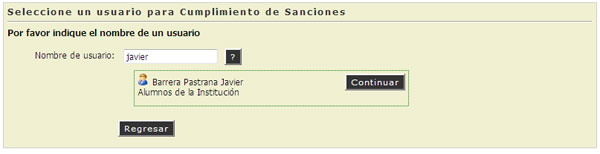
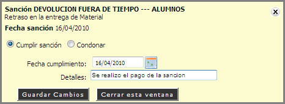

3.4. Cumplimiento de Sanciones
En esta opción el Administrador del Sistema podrá registrar el Cumplimiento de las Sanciones de los Usuarios.
REQUISITOS: Para registrar una Sanción deberá contar con el Nombre de Usuario quien cumplira la sanción.
- Escribir el Nombre del Usuario, Teclee [Enter].
- Si el usuario no existe el sistema mostrará un Mensaje de Alerta ("El usuario no fue encontrado").
- Si el usuario existe, el sistema mostrara el Nombre Completo del Usuario. (Continuar Paso No. 2)
- Hacer "Clic" en la opción [Continuar].

- El Sistema mostrará la pantalla donde se introducirán los datos necesarios para el cumplimiento de la Sanción.
-
Elegir la Sanción que será cumplida, clic en el botón Cumplimiento.
- Aparecerá un Cuadro de Diálogo, se muestran los datos requeridos para cumplir la sanción.
- "Selecionar" una opción.
- Cumplir Sanción: Se seleccionará la fecha que se cumplirá la sanción y se describiran los detalles.
- Condonar: Perdonar la sanción y se escribiran los detalles.
- Hacer "Clic" an la opción [Guardar Cambios].

- Se mostrará un Mensaje de Alerta, el cumplimiento de la sanción fue registrada y se enviará un email al Usuario Sancionado.
NOTA: El Botón con el Símbolo de Interrogación (?) , puede ayudarnos a Localizar o Consultar un Usuario de la Institución o un Ítem de un Material.